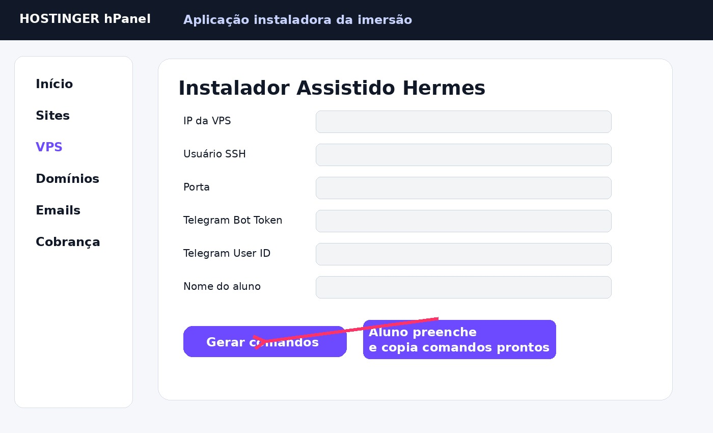

Do zero na VPS até o Hermes no Telegram.
Ferramenta para aluno leigo: mostra onde pegar IP/SSH na Hostinger, gera comandos prontos, instala Hermes, baixa o kit da imersão e orienta a conexão com Telegram.
Mapa prático: humano faz x máquina faz
Humano faz
clicarcriar contacopiar dadoslogin manual
- Acessar Hostinger VPS e contratar VPS.
- No hPanel, abrir VPS → Gerenciar.
- Copiar IP, usuário SSH e porta, ou abrir Web Console.
- Acessar @BotFather e criar o bot.
- Acessar @userinfobot e pegar Telegram user ID.
- Escolher LLM: OpenAI API ou OpenRouter.
Máquina faz
instalabaixa kitgera comandosroda gateway
- Instalador roda na VPS.
- Instala dependências e Hermes.
- Baixa o kit da imersão.
- Cria pastas de trabalho.
- Depois o aluno roda
hermes setup --portalou configura OpenRouter/OpenAI. - Depois o aluno roda
hermes gateway setuppara Telegram.
Links diretos da aula
Comprar VPS Hostinger Criar bot no BotFather Pegar Telegram ID OpenAI API Key OpenRouter API Key Nemotron grátis
LLM: opção paga e opção gratuita
Opção paga mais direta: OpenAI API
Atenção: assinatura do ChatGPT não é API. O aluno precisa entrar no Platform, criar API key e adicionar crédito/billing.
- Acessar platform.openai.com/api-keys.
- Criar chave secreta.
- Adicionar billing/crédito se pedir.
- Configurar pelo assistente:
hermes modelouhermes setup.
Opção grátis/barata: OpenRouter + Nemotron
OpenRouter tem modelos gratuitos, incluindo NVIDIA Nemotron. Pode ter limite, fila ou instabilidade, mas serve para aluno sem crédito inicial.
- Acessar openrouter.ai/keys.
- Criar API key.
- Escolher modelo:
nvidia/nemotron-3-ultra-550b-a55b:free. - Configurar no Hermes com
hermes model, escolhendo OpenRouter.
Comando manual se já tiver a chave OpenRouter
hermes model # escolher OpenRouter # colar OPENROUTER_API_KEY # modelo sugerido gratuito: nvidia/nemotron-3-ultra-550b-a55b:free
Comando único para colar no terminal da VPS
Se o aluno já está dentro da VPS, este é o comando principal:
curl -fsSL https://hlreboques-oss.github.io/projeto-sites-demos/imersao-hermes-0913/install.sh | bash
Esse instalador instala dependências, instala Hermes, cria pastas e baixa o kit da imersão para ~/imersao-hermes.
Instalador assistido
Preencha o que o aluno pegou na Hostinger/Telegram. A página não envia esses dados para lugar nenhum, só gera comandos no próprio navegador.
1. Entrar na VPS pelo terminal do computador
ssh root@IP_DA_VPS
2. Instalar Hermes dentro da VPS
curl -fsSL https://hlreboques-oss.github.io/projeto-sites-demos/imersao-hermes-0913/install.sh | bash
3. Próximos comandos dentro da VPS
hermes setup --portal hermes hermes gateway setup hermes gateway hermes gateway install hermes gateway start hermes gateway status
4. Prompt inicial para o agente
Leia todos os arquivos da pasta ~/imersao-hermes, começando por ~/imersao-hermes/01_BASE_DO_AGENTE_HERMES.md. Use isso como base operacional deste projeto. Depois me faça 7 perguntas para entender minha oferta, público e meta comercial.
Prints guiados: onde pegar cada informação
Observação: os prints do hPanel abaixo são modelos visuais desenhados para aula, baseados no fluxo público da Hostinger. A tela real pode mudar um pouco, mas os nomes principais são VPS, Gerenciar, Visão geral, Detalhes da VPS, Root password e Web Console.
1. Página da VPS na Hostinger

2. hPanel → VPS → Gerenciar

3. Onde pegar IP, usuário e porta SSH

4. Web Console para leigos

5. BotFather no Telegram

6. Instalador assistido

Passo a passo Telegram
Enviar
/newbot.Exemplo: Agente João Hermes.
Exemplo: joao_hermes_2026_bot.
Token é segredo. Não mandar no grupo.
Abrir @userinfobot e enviar /start.
hermes gateway setup
Comprar VPS barato
Procure plano VPS KVM básico. Para aula: 2 GB RAM funciona, 4 GB RAM é melhor. Ubuntu 22.04/24.04.
Para aluno leigo
Use Web Console da Hostinger. Ele abre terminal no navegador e evita configurar SSH local.
Segurança
senha não vai no chattoken não vai em grupologin manual